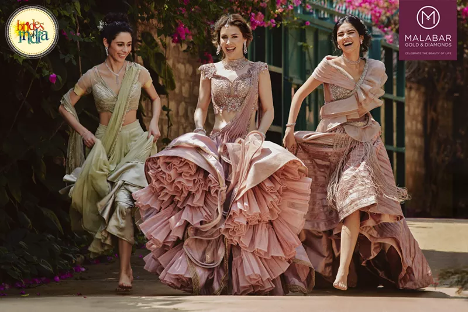
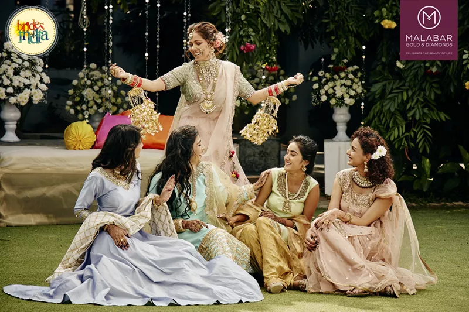
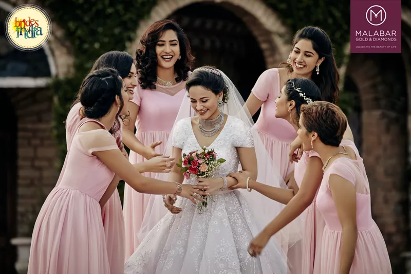
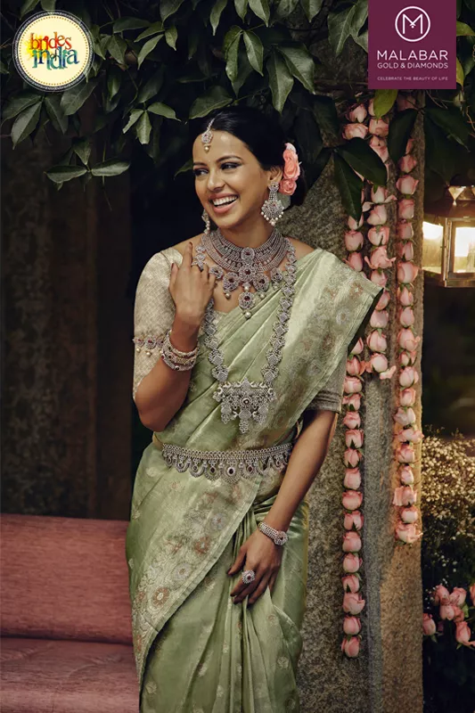

Bridal Jewellery Trends
2019: The Only Handbook
You Need!
BY Sakshi | 01,Nov,2019 | 6 min read
Bridal Jewellery is not only special, but totally different from the rest in terms of craftsmanship and design.
It is jewellery that can transform a girl to a bride, bringing together her look, or even sometimes, being the highlight of it!
Jewellery trends come and go, but it's always a win-win to invest in a reputed brand and buy something that is timeless and can
be reused after the wedding with ease as well. You and I both know how brides from different parts of India have their own unique styles
and trends. So here's what we did! We decided to put together jewellery trends for 2019 - everything you would want to know (and own).
Whether it's south Indian temple jewellery or typical north Indian bridal jewellery, here are some of the popular designs from all over India, along
with Malabar Gold & Diamonds, who have jaw-dropping jewellery for brides of all ethnicities across the country.
Diamond Jewellary

Diamond jewellery might just be the most versatile of all, as it goes along with Indian, Western and fusion wear.
Diamonds pair well with lehengas and even gowns. From simple and dainty to bold and glamorous, you can always pick something that
suits your bridal style and look. The best part is that diamond jewellery works with outfits of any hue or colour, and their reusability is a big plus
point!
Punjabi Jewellary

Punjabi brides look different from the rest, thanks to their heavy jewellery, which comes in so many designs and types.
Whether a bride wants to wear polki jewellery, diamond jewellery or something encrusted with precious stones like emeralds and rubies,
there are so many options out there to make the bridal look special. Brides can choose one or multiple necklaces, and when it comes to hair
ornaments, the main pick is between a mathapatti, maangtikka, passa or a combination of a maangtikka and passa, which has also become very
popular lately.
Christian Diamond Jewellary

When it comes to picking jewellery with a Christian gown, you just cannot go wrong with diamond jewellery,
which is a perfect fit for white or ivory outfits. Solitaire string necklaces look gorgeous, or you could choose to layer it with a
bigger, bolder necklace. Teardrop or stud earrings can complete your look, making the bridal look traditional, yet with a touch of modern.
Heritage Diamond Jewellary

There is something special about a Heritage Diamond Indian bride decked up in diamonds from head to waist,
they look elegant, and escalate the bridal attire instantly. Temple jewellery is an essential part of any south Indian bride, and
the option of wearing diamond temple jewellery gives the brides a chance to mix tradition with contemporary looks! Brides can choose to wear
one statement necklace or layer up short and long ones to create their own statement look.